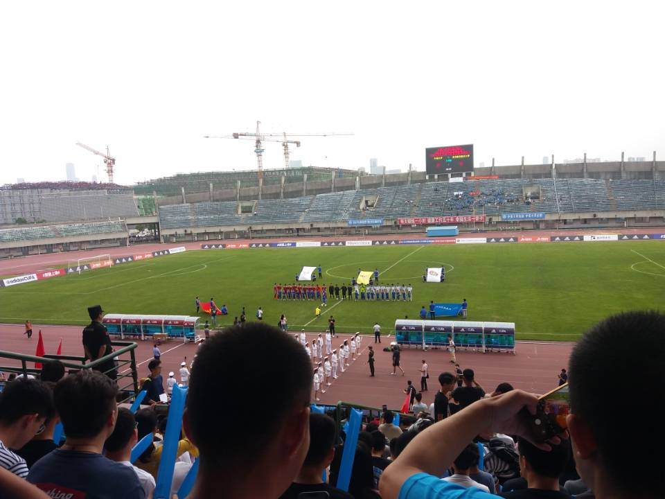

其实很早就准备写2019的年终总结了，但是一直拖到现在才写完。也并不是因为这份总结很难写，只是我的拖延和逃避已经发展地愈发不受我控制了。我最初的打算是在阳历2020年1月1日发出来的，但是那段时间实在是有很多意想不到的事情出现，以至于我无暇顾及这件事。后来准备在新年的时候写完发出来，结果到了家之后拖延的心思更加无法控制了，于是就一直拖了两个多月，到了现在这个时间。这也是我2019年的一个缩影吧，在不断的拖延、逃避、焦虑之中虚度光阴。
1月 考试、数模、回家
大三下的黑暗考试周终于结束，只记得考试最后一天为了准备云计算和软件体系结构的考试通宵复习，结果第二天考试的时候晕乎乎的，自我感觉差极了，不过最后的分数还是挺不错的。之后就是准备美国大学生数模比赛了，刚开始的时候去网上搜了往年几乎全部的考题，拿着之前借的学长的书认真看了一两天，之后懒癌发作，不断地拖延，结果就是到了比赛开始的时候还是只看了几页，对所有题目一点概念都没有，比赛的那几天真的很难受，明明一点也不懂还是和队友硬着头皮写了20多页的英文交了上去，每天都是煎熬，比赛结果自然也是不尽人意了，只拿了S，比赛结束的时候开心极了，终于不用再为这个东西浪费时间了，说真的，我一点收获都没有，应该是自己准备的实在是太少了吧。比赛结束后又在学校呆了几天，1月31号（阴历腊月二十六）就溜回家了，还刚好赶上村里的春晚，可以说是十分开心了。

2月 春节、访友、返校
2月原计划是好好看一下spring和springboot以便开学时找实习，但是家里是真的很冷，只有一直坐在床上才不感觉那么冷，坐在床上撸代码实在是一件很难受的事情，视频看着看着就睡着了，然后就很抗拒继续去学习，于是就在床上把《进击的巨人》看完了，还看了一点游戏《绝地求生》的直播，可见人在逃避做一件事的时候真的什么都可以做orz，所以最后学习这件事也无疾而终了。春节的记忆也模糊不清了，由于自己的逃避搞得自己春节的时候也没办法完全开开心心的过，之后和yl一起去了hw家里住了一晚，一起去了园博园，这几天还是很开心的，只是真的很冷，对了，在hw家里玩的时候还不小心把他的家给淹了emmmm。之后就是回学校了，第一节课好像是任总的《项目组织管理》？这个课真的全部当相声来听了，可能也长了一些见识吧。
3月 准备实习面试、和好友游长沙
春节里没能好好准备面试，只好在学校里赶着刷题了，似乎刷了不少力扣上的题目，但是比起面试的要求还是远远不够的，于是就把投简历的时间一拖再拖，以至于错过了最好的“金三银四”。实习面试这个事情，是越早越好的，到后期很多名额都已经差不多满了，面试要求也就随之提高了。后来实在没有办法就在3月的末尾投了很多简历，投完字跳过了很久还是没有收到回复，就又投了字跳的其他岗，结果投错了。。。但是我没有找到撤销的入口就索性不管了，后来居然在我和朋友一起出去玩的时候打来了电话，我就说投错了，结果后来回去一看，之前投的所有岗位全部红了，我与字跳的缘分也就到此了。除了实习的事情，这个月tl和ts来长沙找我和yr玩了几天，那几天恰好是前后一个月天气最差的几天了，直接从外套跳到了羽绒服。虽然天气很差，我们还是又转了一遍长沙比较有名的地方，橘子洲头、黄兴广场、岳麓山、省博，离别的时候还是很不舍的。
4月 实习面试、开始全力保研
百度和腾讯的提前批都已经结束了，需要先进行笔试，两个笔试我都挂了emmm。阿里倒是因为有内推还面试了几次，这也是我唯一经历的面试，面试前实在是紧张的要死，因为好多东西都还没有准备，一面的表现也很糟糕，我就觉得凉了，结果后来另一个杭州开发测试软件的部门把我捞了起来又面了一下，过了一面，二面的氛围很轻松，但是可能因为我很坚定的说要读研也可能是因为实力太菜就挂在了二面，这个时候基本上剩余的实习选择很少了，我就没有再找实习了，开始全力准备保研的事情。
5月 保研准备、观看CUFA比赛、校园跑
5月主要任务基本就是保研了，虽然一直在准备，但是其实自己一直在拖延逃避，基本相当于虚度吧。期间参加了一次类似于大冲关的那种校园跑，当从3米左右的软梯上下来的时候，我突然发觉，我的体能体质，我的生活状态，完全和小时候不同了，小时候我面临这些事情，会觉得有趣开心，可是此刻，我只怕自己会受伤，我似乎失去了一些很重要的东西，这多少会让人有些感伤吧。除此之外，去看了我校的两场CUFA比赛（第二场是在6月，但是也放在一起说了吧），也算是单调的生活中比较开心的时候了，大型的体育活动真的可以带动人的热情，比赛之后的维京战吼、最后一场主场比赛结束后我校广播员对将要退役球员的感谢致辞，身临现场感受这些，真是感动满满。

6月 组织部聚餐、一次十分痛苦的高烧
六一的时候组织部聚餐，一起去吃了烤全羊，组织部给我一种家的感觉，很亲切，很舒服，和gs、xy、sw在一起的时候很放松，什么也不用想，只要碰在一起就很开心了。之后毛概考试的前两天，毫无征兆的突然高烧，居然直接把我在凌晨烧醒了，虽然我大学之前经常生病，但是能把我从熟睡中直接烧醒，这还是印象之中第一次。更为严重的是，毛概我还没开始复习。我怀疑是自己的咽炎引起的，想要一次根治了，就去了中心医院，结果花了我一千多rmb还是只治好了发烧，这是我迄今为止治疗发烧花费最高的了，以后应该也不会有比这次更高的了。
7月 华师、同济夏令营、短暂归家、科大夏令营、写论文
夏令营是我今年准备最多的事情了，我参加夏令营的旅程也正是从7月开始的。7月初和jh一起去了上海，第一个夏令营是华师软件，华师的环境和铁道十分相似，十分的安静。我机试和面试都表现得不是很好，不过后来还是很幸运地拿到了优营。不过华师的夏令营令我印象深刻的并不是它本身，而是我们夏令营的前一晚，我约了tl出去玩，那天去了外滩，见到了和平饭店，见到了东方明珠，原以为上海的繁华会让我震撼，结果我几乎没有任何感觉，那一刻我突然明白，外界的环境可能很难再打动我了，或许，只有认真的生活，做到一些可以让自己骄傲的事情才可以让自己开心了。

8月 论文
这个月基本上全部用来赶论文了，虽然前期一直拖延，但是后期还是认真地做起来了，有痛苦有快乐，总体来说还是比较充实的。
9月 复习计网、浙大预推免、联系导师、回家
复习计网是我一年来第一次感受到自己有了进步，这也算是我唯一的真正收获吧。我觉得复习的内容很大程度上帮助我通过了学院的面试。去浙大之前，我的处境是很尴尬的，原来拿到了同济的offer，通知上的意思是按照名次从高到低依次录取，结果通知说还要再去考核一次，之前因为觉得自己同济肯定能进，就放弃了华师的offer，很多学校也没有报，这就导致我一个学校都去不了了，立刻变成了失学儿童。但是恰好西交软件到我们学校宣讲招生，就赶过去拿到了一份offer。也就是去浙大之前，我可以说是基本没有退路了，但是浙大的机试题我也没有刷，所以是极其没有信心的。后来可能今年是第一年在考核中加入机试的原因，机试题很简单，人均满分，于是希望就提高了很多，又恰好面试的时候被问了几个计网的问题，只能说太幸运了，就这样通过了学院的考核。之后就是联系导师了，面试我的老师有两位主动联系了我，当时实在是少不更事，就想要选择一位导师就此上岸，不过还是联系了几位导师，但是要么是名额满了要么是我没通过考核，后来发现联系我的导师带的一位博士学长是华为百万年薪博士生之一，并且还是这位学长来招我，于是我就没有再去联系其他导师，也没有更深入地了解这位导师究竟如何就选择了这位导师就回家了，没想到这竟成了我今年最错误的选择。
10月 在家休息、带妈妈去北京、返校
因为妈妈很想去北京看一看，而且今年还是建国70周年，我们一家人又恰好都有空，于是我和姐姐就计划一家人一起去趟北京，买了去的车票，结果我还是准备的太仓促，后来发现妈妈想去的毛主席纪念堂那些天是不开放的，而且故宫还有很多景点的门票也都卖完了，只好放弃了这个计划。实在是很惭愧，为爸妈带来希望又亲手把希望撕碎。爸妈在出发的前一天还忙着把活都赶出来，期待满满，每次我想到给他们泼了一盆冷水，我就很无法原谅自己，幸好后来还有补救的机会。这之后的几天，我就在家里完全放松地混吃混喝，偶尔也去地里帮爸妈干点农活。经历了很长一段时间的焦虑之后再过这种悠闲的生活，感觉很不一样，真的很舒服！之后，就又趁着家里不太忙的时候，带妈妈去了北京，到了故宫、景山公园、奥林匹克公园、毛主席纪念堂，只是没能让妈妈看到升旗，这是这次旅行的其中一个遗憾，另一个遗憾就是爸爸那段时间有事情没办法一起。这次旅行，我看到自己身上很多缺点，对于这种外出游玩地安排，我实在是很不在行，并且我似乎很容易就会发脾气，这是一个我无法接受的缺点，它会让我不断地伤害身边的人，同时伤害自己。从北京回来之后又在家里呆了几天，就返校准备参加本科最后一次体测了。

11月 体测、去杭州实验室、修改论文
在长沙呆了一周左右，见了这里的朋友和同学，学习物联网的计划被完全搁置，差不多每天都在玩《刀塔霸业》。体测还有拍完毕业证件照之后就去了杭州，刚去的时候不知怎得有种心慌的感觉，我似乎去到一个陌生的地方就会有这种感觉，之前和姐姐一起去张家界、和妈妈一起去北京以及本科刚去长沙的时候都是这样。导师的实验室因为位置满了就只好做了其他导师的位子，和师兄师姐虽然在同一间屋子但是不在同一个地方，交流就没有那么多。呆了一周之后本科的导师发消息说之前的论文中了，但是还需要修改一下，于是我的懒癌又发作了。。。拖了很久才开始整，这也导致我刚开始努力的状态被完全打断。后来虽然论文改好了，但是状态一直没有调整过来，一直是停滞的状态。
12月 在实验室学习、变更导师
自从修改论文导致状态下滑之后，自己的状态一直很不稳定，很容易就一觉睡到中午，所以感觉自己还是一直停留在原地，没有什么明显的进步。在实验室呆了一段时间之后，发现了一些问题，犹豫了很久，最后还是下决心要变更导师，但是这个月还没有向导师提出来，之后的事情就在2020年的总结上说吧，毕竟现在还没有结果。
展望
2019年，虽然不能说毫无收获，但是其实自己是处于一个停滞的状态的。回想一年来发生的事情，好像是在一瞬之间，好像有很多想做的事情都没有做，几乎没有做成一件可以让自己满意的事情，虽然最终获得了一点看似不错的成果，但是很快事情又变得糟糕了。这些年自己的表现，实在无法让自己满意，没有活着的感觉，好像计划没有一个真正地执行过，好像一直生活在痛苦之中，好像一直在遗憾一直在后悔，真的很想认真地活着啊！最近的席卷全国的新型冠状病毒又十分严重地影响了我的计划，面对这种难以抉择的困难，我又逃避了很久，又要重演一遍2019吗？我真的不甘心自己的青春就这样逝去啊！2020年，我不奢求我担忧的事情有一个好的结果，我只希望自己可以认真地生活，不要逃避，不要拖延，自己下决心做的事情自己真的可以去做，成功还是失败倒是次要的事情了，认真地快乐地生活已经是一件十分十分了不起的事情了。